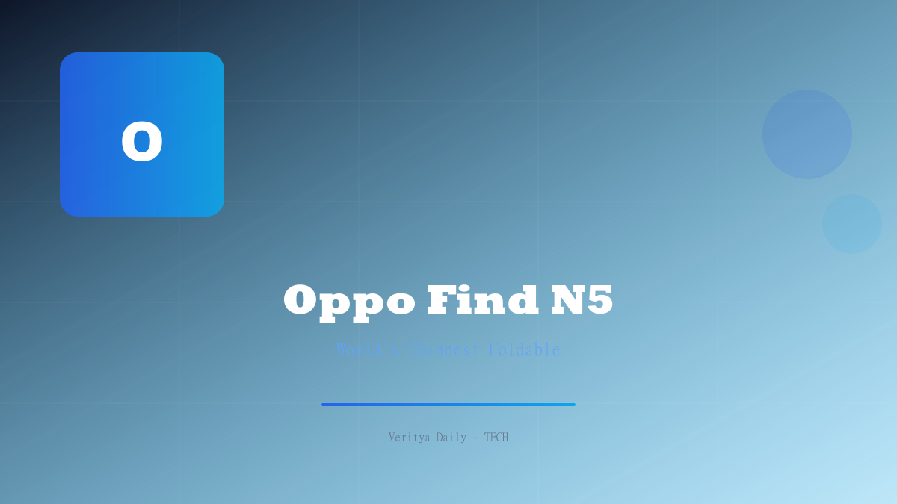

Oppo Find N5: The World's Thinnest Foldable That Puts Samsung to Shame

Table of Contents
[Ad Zone 1]
Oppo has done what many thought impossible — built a foldable phone so impossibly thin that it makes Samsung's Galaxy Z Fold look chunky by comparison. The Oppo Find N5 isn't just thin; it's a statement of engineering intent. At approximately $1,870, it enters the premium foldable arena swinging hard, with a Snapdragon 8 Elite chip, an 8.1-inch 2K inner display, and a feature no one saw coming: seamless macOS integration.
The Thinnest Foldable Ever Built
When Oppo says the Find N5 is the thinnest foldable in the world, they're not playing word games. The phone, when folded, achieves a profile that defies the physics of hinge mechanisms and dual-display stacking. Every millimeter has been shaved through a redesigned hinge architecture that eliminates unnecessary bulk while maintaining structural rigidity.
This isn't just a vanity metric. A thinner foldable means:
- Better pocketability — the entire point of a foldable is to be compact when closed
- Lighter weight — less material means less fatigue during prolonged use
- Smaller gap when folded — no more dust-collecting crevice
- More premium feel — thin devices simply feel more luxurious in hand
Samsung's Galaxy Z Fold series has been iterating for years, but each generation has only achieved incremental thinness reductions. Oppo has leapt past the entire field in one generation.
"The Find N5 doesn't just compete with Samsung — it redefines what a foldable can be when engineering is prioritized over iteration."
Display: 8.1" 2K Foldable + 120Hz LTPO Outer
The Find N5's display setup is nothing short of flagship-grade on both panels. The inner foldable display measures 8.1 inches with a 2K resolution, delivering crisp text, vibrant colors, and excellent brightness for both media consumption and productivity. When folded, you're working with a 6.62-inch FHD+ outer OLED display featuring a 1-120Hz LTPO adaptive refresh rate.
The LTPO technology on the outer display is particularly noteworthy. It dynamically adjusts the refresh rate from as low as 1Hz to a smooth 120Hz based on what's on screen, which has a dramatic impact on battery efficiency. Static images sip power at 1Hz, while scrolling and gaming get the full 120Hz treatment.
| Specification | Oppo Find N5 | Samsung Galaxy Z Fold (typical) |
|---|---|---|
| Inner Display | 8.1" 2K OLED | 7.6" QXGA+ AMOLED |
| Outer Display | 6.62" FHD+ 1-120Hz LTPO | 6.3" FHD+ 120Hz |
| Processor | Snapdragon 8 Elite | Snapdragon 8 Gen 3 |
| Folded Thickness | World's thinnest | ~12.1mm |
| macOS Integration | Yes | No |
| Price | ~$1,870 | ~$1,899 |
Snapdragon 8 Elite Powerhouse
Under the hood, the Find N5 is powered by Qualcomm's Snapdragon 8 Elite, the latest and most powerful mobile silicon from the chipmaker. This isn't just a spec-sheet flex — the 8 Elite brings meaningful improvements in:
- CPU performance — next-gen Oryon cores deliver desktop-class responsiveness
- GPU performance — ray tracing and variable rate rendering for console-quality mobile gaming
- AI processing — on-device generative AI features run faster and more efficiently
- Power efficiency — a refined 3nm process means better battery life despite the thin body
For a foldable, thermal management is critical. The larger surface area of the Find N5's unfolded form actually helps with heat dissipation, and Oppo's internal cooling system appears well-engineered for sustained workloads. Whether you're editing documents on the large inner display or gaming at high settings, the Find N5 holds its own against any conventional flagship.
🔑 Key Takeaways
- The Oppo Find N5 is officially the world's thinnest foldable phone
- 8.1-inch 2K inner display + 6.62-inch 1-120Hz LTPO outer OLED
- Powered by Snapdragon 8 Elite — the fastest mobile chip available
- Unique macOS integration sets it apart from all Android rivals
- Priced at ~$1,870, undercutting Samsung's Galaxy Z Fold
Seamless macOS Integration — A First for Android
Here's where the Find N5 gets genuinely surprising. Oppo has built seamless macOS integration into the Find N5, making it the first Android foldable to offer deep, system-level connectivity with Apple's Mac lineup. This isn't just file sharing — it's a cross-ecosystem workflow tool.
What this means in practice:
- File sync — drag and drop files between Mac and Find N5 without third-party apps
- Clipboard sharing — copy on your Mac, paste on your phone (and vice versa)
- Notification mirroring — see and respond to phone notifications from your Mac
- Screen extension — use the Find N5's 8.1-inch display as a secondary Mac screen
This is a bold move. For years, the Apple ecosystem lock-in has been one of the biggest barriers to Android adoption among Mac users. Oppo is effectively saying: "You can have your Mac and your Android foldable too." If this feature works as advertised, it could be the single most compelling reason to choose the Find N5 over a Samsung foldable.
It's worth noting that Samsung has its own cross-device features through Link to Windows and Samsung DeX, but neither offers native macOS integration. Huawei's ecosystem is largely siloed within its own devices. Oppo's move here is genuinely category-defining.
Why Samsung Should Be Worried
Samsung has dominated the foldable market for years, largely because there simply weren't credible alternatives in many markets. The Galaxy Z Fold series became the default choice by absence of competition as much as by merit. The Find N5 changes that calculus dramatically.
Here's why Samsung should be paying close attention:
- Thinner profile — the single most requested foldable improvement from users
- Better displays — larger inner screen with 2K resolution and LTPO on the outer
- Newer silicon — Snapdragon 8 Elite vs Samsung's older Gen 3
- macOS integration — a feature Samsung categorically cannot match
- Competitive pricing — at $1,870, it's priced aggressively against the Z Fold
Samsung's advantage has always been its global distribution network and brand recognition. But as Oppo expands its footprint, those advantages erode. The Find N5 isn't just a good foldable — it's a direct challenge to Samsung's foldable supremacy.
[Ad Zone 2]
Verdict: Is the Find N5 Worth $1,870?
At approximately $1,870, the Oppo Find N5 isn't cheap. But foldables never are. The question isn't whether it's expensive — it's whether it's worth the premium over alternatives. And on that front, the Find N5 makes a compelling case.
You're getting:
- The thinnest foldable form factor in the world
- Dual flagship-grade OLED displays with LTPO technology
- The fastest mobile processor available (Snapdragon 8 Elite)
- A unique macOS integration feature no competitor offers
- A price that undercuts Samsung's comparable offering
The foldable market has been waiting for a device that doesn't just match Samsung but genuinely surpasses it. The Oppo Find N5 appears to be exactly that device. Whether it can dethrone Samsung will depend on availability, long-term durability, and software support — but on hardware alone, Oppo has built something special.
For anyone who's been holding off on foldables because they were too thick, too slow, or too limited, the Find N5 removes every one of those excuses. It's the foldable that finally delivers on the promise of the form factor.